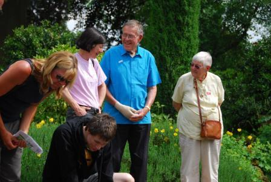

The Search for Christian Unity
|

|

Finding God in Churches TogetherI have been actively engaged in the search for Christian unity locally from 1992 to 2010. It has been a time of both challenge and reward. I have come to think of myself as part of the local Christian community, which for me is more than being a Roman Catholic. Christians together are more than Christians apart. I have particularly valued the support of the local Christian community in times of crisis. When a much loved parish priest left unexpectedly to get married, and the reporters were hovering round the church doors eager for scraps of gossip to publish, my parish was thrown into crisis. The wider Christian community gathered round in support. When I was a child that would have been unthinkable; in those days the other Churches would have gathered round to gloat. That is how far things have changed in my life time. Sometimes the journey seems painfully slow, but I think that is due to our impatience. In this work you need to be willing to wait till the end of time. And that takes a lot of patience. The perfect unity to which we are called exists at the end of time, which is when the kingdom comes, which is when God comes. If we are willing to wait, it will be given to us in God’s good time. This unity, this kingdom, is a gift freely offered that can be freely received. If we are impatient and try to make it come in our time, by our own efforts, we will be frustrated. In addition this gift cannot be possessed. It does not belong to us; it is God’s gift to the whole world, that the world may be one with God. If we try to possess it we lose it. This journey has turned my Christian faith upside down. In the beginning I thought of myself as a Roman Catholic in the Roman Catholic Church. There were Anglicans in the Anglican Church, Methodists in the Methodist Church and so on. Christians were divided into Churches; our Churches kept us apart. At the end of the journey I think of myself as a Christian in the Roman Catholic Church. There are Christians in all the Churches, and beyond. Christians form an invisible network that transcends Church boundaries and unites the Churches. This journey took me through a profound crisis of faith which changed my sense of identity; my sense of belonging. The crisis was triggered by a publication of the Catholic Bishops conference. In 1998 the Roman Catholic Bishops of the United Kingdom published One Bread One Body; a teaching document on the Eucharist. The hierarchy had become increasingly concerned at Roman Catholics sharing the Eucharist with other Christians. The teaching on the Eucharist and the rules about sharing it are at the very heart of our identity as Roman Catholics. To question this teaching threatens our very identity. The document was an attempt to put the brakes on sharing the Eucharist with other Christians. I had just been on pilgrimage to Taizé with the local United Reformed Church where I had spent a week sharing the Eucharist daily with thousands of people from different Churches all round the world. I came back with a song in my heart and a spring in my step. Two weeks later I took part in a diocesan conferenceon One Bread One Body. The doctrine in the book and the reality I had experienced in Taizé seemed to be totally divorced. I felt a deep sense of despair in the hierarchy of my Church. I could not in clear conscience accept the teaching of my own bishops. It seemed that I must leave my Church. This brought up very deep questions and anxieties. I wrestled with these anxieties for a whole year. I had commited myself to following the call of Christ in my life. Was Christ calling me to leave my Church? Then I went on pilgrimage to Iona with the local Methodists and reached a decision point. I disagreed with a doctrine that was at the very heart of my own Church and that defined Roman Catholic identity. In which case I could no longer in good conscience say that I was a Roman Catholic. This felt like a deep loss of identity, as if I had discovered at the age of 66 that I had been adopted at birth and that the people I had thought of all my life as my parents were not my real parents. My real parents were unknown to me. My real identity was unknown. On the other hand it had become clear to me that Christ was not calling me to belong to any other Church. Christ seemed to be calling me to live with no Church identity. Christ was calling me to be a Christian. As a Christian I see myself as a child of the one heavenly father, and our father has no favourites. He loves us all equally. In the father’s eyes there is no hierarchy among his children. It is no better to belong to one Church than another. In our father’s eyes denominational identity is irrelevant. He loves us all equally.
Turvey Abbey 2006Philomena and I have just returned from a weekend retreat at Turvey Abbey near Bedford. It was an intense retreat and I was surprised at a number of insights that came up for me. One related to the search for Christian unity and I would like to share it with you while it is still fresh and clear and before it begins to fade. The theme of the retreat was the beatitude “Blessed are the poor in spirit, for theirs is the kingdom of heaven.” (Matt 5:3). The retreat was held in silence punctuated by several sessions of Lectio Divina. This combination of silence and depth created an intense experience for everyone. There was no opportunity to indulge in the comfort of chatter and “talking about” things. The retreat was very effectively facilitated jointly by George Wilson, a lay Buddhist, and Sr. Lucy, a Christian Benedictine nun. The material that we used for Lectio Divina was a sermon on this beatitude by the Christian mystic Meister Eckhart, and a Buddhist response to that sermon written by George Wilson. The response drew parallels between Christian and Buddhist mystical insights. Caveat: In what follows I make dogmatic statements, I sermonise. This can seem arrogant and get up peoples’ noses. I write this way for brevity. Before every dogmatic statement you can assume a hidden “From my particular point of view at this particular point in time, it seems to me as if ...” I take it for granted that I can never see reality as it is. I can only see reality from my particular point of view at this particular point in time. To see reality as it is I would have to be able to see from all possible points of view at every point in time simultaneously. I would have to be able to see through the eyes of every person, past present and future, at every point it time simultaneously. Only God can see in that way, and I am not God. Although God is in me and does look out through my eyes. I do get a glimpse of reality. The first thing that came up for me and surprised me on the retreat was to realise with unusual clarity that the end of the search for Christian Unity is not Christian unity. I sort of knew this before, but it suddenly became crystal clear. Christian unity is merely the beginning of the search. I wonder if this is what Jesus meant when he prayed that we may all be one so that the world may believe. A believing world transcends Christian unity. If we imagine Christian unity to be the end of the search, we will inevitably fail. We will have given up before we have even begun. We will be missing the whole transcendent dimension of the search. Ultimately there is only one unity. All searches for unity have this same ultimate destiny; a unity that is beyond all unities. The Christian search for unity and the scientific search for unity have the same ultimate end. The scientific search for a unified theory of everything does not end in a unified theory of everything. That is merely the beginning. For me the ultimate end of all searches for unity is what Jesus called the kingdom of heaven. He left us a rich store of metaphors to show us the way to the kingdom and some to warn us when we are going in the wrong direction. The beatitudes crystallise this vision for me. The kingdom of heaven is like a world in which the beatitudes have come true. This is a paradoxical world in which the poor are rich and the rich are poor. Even time itself shares in the paradoxical nature of the kingdom. The end of time and the beginning of time become one. I think this is how the early disciples experienced time. It seemed as if they were at the end of time and the beginning of a new creation. They were beginning to experience living in the kingdom. When we finally reach the kingdom we will realise that we are back in the garden where it all began. The gate through which we enter the kingdom is the same gate through which we left the garden. Only this time we will be in the garden by choice rather than chance and fully awake rather than as in a dream. The dream we have all dreamed from the beginning will have come true. God’s dream for creation will have come true through us and in us. Somewhere along the way we Christians lost sight of the transcendent dimension of the kingdom. Our vision got truncated in the Church. We mistook the Church for the end and lost sight of the fact the end of the Church is the beginning of the kingdom. I think that Christians began to lose the experience of living in the kingdom when logic became king of Christian thinking. In the kingdom of logic things exist in themselves. A thing is what it is and is not what it is not. In the kingdom of paradox, nothing exists in itself. A thing is one with what it is not. Catholics are one with non Catholics. Christians are one with non Christians. God is one with what is not God. An extreme is one with its opposite. The rich and the poor become one, both materially and spiritually. The supreme spirit becomes one with the humblest spirit. For Roman Catholics of my vintage, the God I was taught to believe in as a child - the supreme Spirit who alone exists of himself - is no more. God and I are one, although I am not God and God is not me. Logic ends in division. Logic divides this from that, right from wrong and so on. Paradox ends in union. Paradox reconciles what logic has divided. Logic is quick to divide, paradox is slow to heal. Christianity today needs an infusion of paradoxical thinking. We need people who are slow to judge; people who can hold opposing points of view together long enough for healing to begin. I am reminded once again of the words with which Pope John announced the second Vatican council: “We will not try to find out who was wrong, we will not try to find out who was right, we will only say: let us be reconciled!” In Praise of the MarginsThe world’s religions hold much in common. Love is central to every major religion. What is distinctive to my personal faith as a Christian, what makes me Christian rather than Muslim, or Hindu, or Buddhist, is the call of Christ and the presence of Christ in my life. Christ is always present to me, and Christ calls me to be one with him. I first heard this call about 18 years ago, shortly after I became engaged in the search for Christian unity. I noticed that when Christians from different Churches came together in a spirit of prayer to seek unity, Christ seemed to be present in a special way. Christ was more fully present to me than in the Mass of my own RC Church. I expected the call of Christ in my life to lead me in towards the centre of my own Church. I expected to become more one with Rome. But the opposite happened. Christ seemed to calling me out of my Church. Then I noticed that I began coming into conflict with members of my own Church. There seemed to be a polarisation under way in which some were being drawn outwards, while others were being drawn inwards towards Rome. And we kept colliding. A crisis came when I lost my temper with my own parish priest in a Churches Together meeting. A second crisis came when the Bishops of the United Kingdom published One Bread One Body; a teaching document on sharing the Eucharist with Christians of other Churches. I had spent a week in Taizé sharing the Eucharist daily with thousands of people from different Churches all round the world. I came back with a song in my heart and a spring in my step. Two weeks later I took part in a diocesan conferenceon One Bread One Body. The doctrine in the book and the reality I had experienced in Taizé seemed to be totally divorced. I felt a deep sense of despair in the hierarchy of my Church. It seemed that I must leave my Church. I spent a year agonising over whether Christ was calling me to leave my Church. It became clear that Christ was not calling me into another Church. Christ seemed to be calling me to live on the margins, with no Church identity. What I have learned from this experience is that the centre is not Rome, nor Canterbury, nor Jerusalem. The centre is not a geographical place. The centre is in my own heart. The centre is where God is at home. Christ was drawing me home to God.
Letter to PaulDear Paul, Thank you for your booklet. I think it was important to write this story. The first thing that struck me was the amount of sheer hard work you have put in which was poorly rewarded and largely taken for granted. The second thing that struck me was the contrast between the many frustrations and the profound experiences. I think anyone who takes on the burden of working for unity shares the burden of the cross with Jesus. And don’t forget it was religious people who gave Jesus the hardest time. And it was religious people who plotted and planned to get Jesus crucified. Religion is not all sweetness and light; we mess with it at our peril. But sharing the burden of the cross with Jesus is the price we pay for the profound experiences that are a privilege we never forget – glimpses of the possibility of the kingdom. Another thing that struck me was how Churches tend to see unity as Church unity. I think the call to be one is far deeper and wider than that. I am with Basil Hume in seeing the first step for each person as the search for unity in the depths of their own heart; being one with the God who is closer to me than I am to myself; with the God who makes his home in the depths of my heart. The last step is to reach out and include the whole cosmos. The closer I come to the God within, the wider my embrace of the cosmos. On mission and unity I find Bishop Crispian’s terms mission and communion helpful. This is how I see it. Mission and communion are two sides of the same coin. We are a communion with a mission, and our mission is communion. Our mission is to take communion out into the world; to transform the fragmented multicultural world in which we live into a communion of love. To the extent that the world is not a communion of love, our mission is incomplete. To the extent that our mission is incomplete, our communion is incomplete. Our mission will be complete when we are completely one. On a subtle point I noticed a tendency to hierarchical thinking in CTHI. IBM went through a crisis in 1970. The 60s were the golden age of hierarchical information systems and we were the undisputed world leader. The sky was blue, the sun was shining and money was falling from heaven. In 1970 the train hit the buffers. We had reached the end of the golden age. We are now in the golden age of relational systems like the internet. The transition for designers required a change in the language of thinking. A system is a network of functions in relationship. We had been designing the functions first and the relationships second. That is an aspect of hierarchical thinking. We had to begin thinking relationally. Then you design the relationships first and the functions second. In designing a human system this means designing the network of relationships first and the roles or job specification second. The same principle applies in counselling – the first thing is to build a working relationship with the client. Then the work can begin. In CTHI we tended to spend more time on role specification than on relationship specification. Another symptom of hierarchical thinking is to mistake a part for the whole; to mistake the governing body of a Church for the Church as a whole. The RC Church is a prime example. In CTHI we tended to refer to the central body as CTHI which I think is confusing. It would be clearer to reserve CTHI for the Churches Together in the area as a whole. For my part I want to thank you for inviting me to join you on this part of your journey. My share of the burden was light and I met many interesting people and got many new insights. It was part of my journey too. And we became friends which I really value. Philip 23 Aug 2010 The DEOs say there is not enough time to devote to CTHI because of their denominational/diocesan responsibilities. There is always enough time do do what is most important. A shortage of time indicates a low priority. The problem is that Churches tend to prioritise the internal working of their own Church above working together with other Churches. A covenant is a commitment to work together. Difficulties in forming covenants shows a lack of commitment to working together. I see Churches Together as Churches working together for the common good. Churches put aside their individual self interest in favour of the common good. This is Churches working together for the coming of the kingdom, which does not belong to the Churches. It is God's gift to the world. I too saw a grown man cry at Swanwick. I think he was a Methodist and It was huge shock. . It was the day of the Roman Catholic Mass. The notes for the service said "Roman Catholic discipline forbids the sharing of the Eucharist with members of other Churches, but you are welcome to come for a blessing.". On occasions like that, when Christians have formed a communion of love, to forbid people to share the eucharist is a contradiction. It destroys communion. |